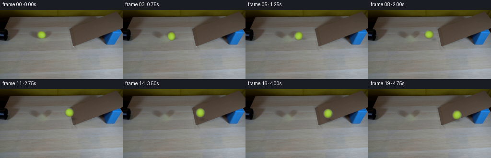
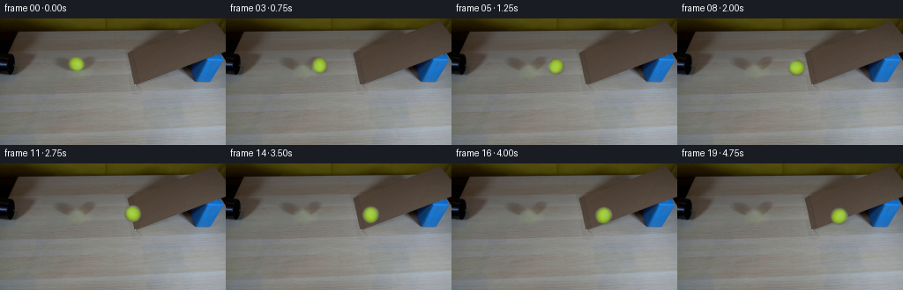
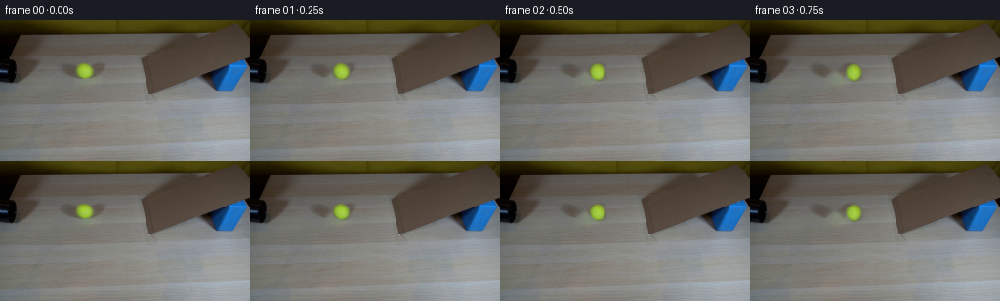

← 本轮 smoke 总览traex/DeepSeek-V4.1-Flash · 0020
text · 256×144 · 4.0 FPS · 20 帧 · 状态 complete · 输出 tokens 50760
原始任务Static locked-off single-shot with fixed frame throughout filmed with constant framerate in real-time. The scene shows a realistic scientific demonstration. The scene only contains the described setup and actions. A simple ramp made of cardboard, propped up by a blue block on a light-colored wooden table. There's a black pipe to the left of the frame that directly points towards it. The yellow tennis ball rolls straight out of the black pipe onto the ramp.
当前保存结果
已保存候选与代码修改
这里按时间展示外部捕获的候选，每份均可单独播放。保存新版本不等于完成视觉检查；下方工具证据记录实际看过的图。
候选 01 · 2026-11-08T21:03:04.434532+00:00 · 点开播放与检查图
inspection.png

transition_check.png
代码变化
--- 上一保存版本
+++ 本次保存版本
@@ -0,0 +1,137 @@
+from pathlib import Path
+
+import cv2
+import numpy as np
+from PIL import Image
+
+import artifact_io
+
+
+WIDTH = 256
+HEIGHT = 144
+FRAMES = 20
+FPS = 4
+
+BALL_X0 = 86.5
+BALL_Y0 = 51.5
+BALL_RADIUS = 9.4
+
+
+def smoothstep(edge0, edge1, value):
+ t = np.clip((value - edge0) / (edge1 - edge0), 0.0, 1.0)
+ return t * t * (3.0 - 2.0 * t)
+
+
+def remove_source_ball(frame):
+ """Reconstruct the small occluded patch behind the initial ball."""
+ mask = np.zeros((HEIGHT, WIDTH), np.uint8)
+ cv2.ellipse(
+ mask,
+ (round(BALL_X0), round(BALL_Y0)),
+ (11, 10),
+ 0,
+ 0,
+ 360,
+ 255,
+ -1,
+ )
+ return cv2.inpaint(frame, mask, 4, cv2.INPAINT_TELEA)
+
+
+def extract_ball(frame):
+ """Extract the photographed tennis ball and its anti-aliased edge."""
+ size = 27
+ patch = cv2.getRectSubPix(frame, (size, size), (BALL_X0, BALL_Y0))
+ yy, xx = np.mgrid[:size, :size].astype(np.float32)
+ rr = np.hypot(xx - (size - 1) / 2, yy - (size - 1) / 2)
+ alpha = 1.0 - smoothstep(BALL_RADIUS - 1.0, BALL_RADIUS + 0.35, rr)
+ return patch, alpha.astype(np.float32)
+
+
+def ball_transform(x, y, scale, angle):
+ center = (BALL_RADIUS, BALL_RADIUS)
+ patch_center = (13.0, 13.0)
+ rotation = cv2.getRotationMatrix2D(center, np.degrees(angle), scale)
+ rotation[0, 2] += x - patch_center[0]
+ rotation[1, 2] += y - patch_center[1]
+ return rotation
+
+
+def add_contact_shadow(frame, x, y, scale):
+ """Darken the surface under the ball without introducing a hard cutout."""
+ yy, xx = np.mgrid[:HEIGHT, :WIDTH].astype(np.float32)
+ sx = 10.0 * scale
+ sy = 4.1 * scale
+ cx = x + 2.0 * scale
+ cy = y + 5.2 * scale
+ distance = ((xx - cx) / sx) ** 2 + ((yy - cy) / sy) ** 2
+ shadow = np.exp(-2.3 * distance).astype(np.float32)
+ shadow = cv2.GaussianBlur(shadow, (0, 0), 1.15)
+ multiplier = 1.0 - 0.24 * shadow
+ return np.clip(frame.astype(np.float32) * multiplier[:, :, None], 0, 255)
+
+
+def composite_ball(frame, patch, alpha, matrix):
+ warped_rgb = cv2.warpAffine(
+ patch,
+ matrix,
+ (WIDTH, HEIGHT),
+ flags=cv2.INTER_CUBIC,
+ borderMode=cv2.BORDER_CONSTANT,
+ borderValue=(0, 0, 0),
+ )
+ warped_alpha = cv2.warpAffine(
+ alpha,
+ matrix,
+ (WIDTH, HEIGHT),
+ flags=cv2.INTER_LINEAR,
+ borderMode=cv2.BORDER_CONSTANT,
+ borderValue=0,
+ )
+ warped_alpha = np.clip(warped_alpha, 0.0, 1.0)[:, :, None]
+ return frame * (1.0 - warped_alpha) + warped_rgb * warped_alpha
+
+
+def ball_position(time_s):
+ # Initial rollout speed with mild rolling friction. The slope adds a small
+ # downward screen-space component while the camera remains locked off.
+ x = BALL_X0 + 27.0 * time_s - 1.4 * time_s * time_s
+ y = BALL_Y0 + 0.083 * (x - BALL_X0)
+ return x, y
+
+
+def generate_frames():
+ source = np.asarray(Image.open("first_frame.png").convert("RGB"), dtype=np.uint8)
+ assert source.shape == (HEIGHT, WIDTH, 3)
+
+ background = remove_source_ball(source)
+ patch, alpha = extract_ball(source)
+ frames = np.empty((FRAMES, HEIGHT, WIDTH, 3), dtype=np.uint8)
+ frames[0] = source
+
+ for index in range(1, FRAMES):
+ time_s = index / FPS
+ x, y = ball_position(time_s)
+ scale = 1.0 + 0.00062 * (x - BALL_X0)
+ distance = x - BALL_X0
+ angle = -0.52 * distance / (BALL_RADIUS * scale)
+
+ frame = add_contact_shadow(background, x, y, scale)
+ matrix = ball_transform(x, y, scale, angle)
+ frame = composite_ball(frame, patch, alpha, matrix)
+ frames[index] = np.clip(np.rint(frame), 0, 255).astype(np.uint8)
+
+ return frames
+
+
+def main():
+ frames = generate_frames()
+ assert frames.shape == (FRAMES, HEIGHT, WIDTH, 3)
+ assert frames.dtype == np.uint8
+ source = np.asarray(Image.open("first_frame.png").convert("RGB"), dtype=np.uint8)
+ assert np.array_equal(frames[0], source)
+ artifact_io.save(frames, Path(__file__).resolve().parent)
+
+
+if __name__ == "__main__":
+ main()
候选 02 · 2026-11-08T21:03:06.340696+00:00 · 点开播放与检查图
inspection.png

transition_check.png

代码变化
代码未变化；重新保存了产物。
候选 03 · 2026-11-08T21:04:20.584136+00:00 · 点开播放与检查图
inspection.png

transition_check.png

代码变化
--- 上一保存版本
+++ 本次保存版本
@@ -49,9 +49,8 @@
def ball_transform(x, y, scale, angle):
- center = (BALL_RADIUS, BALL_RADIUS)
patch_center = (13.0, 13.0)
- rotation = cv2.getRotationMatrix2D(center, np.degrees(angle), scale)
+ rotation = cv2.getRotationMatrix2D(patch_center, np.degrees(angle), scale)
rotation[0, 2] += x - patch_center[0]
rotation[1, 2] += y - patch_center[1]
return rotation
@@ -101,7 +100,8 @@
def generate_frames():
- source = np.asarray(Image.open("first_frame.png").convert("RGB"), dtype=np.uint8)
+ case_dir = Path(__file__).resolve().parent
+ source = np.asarray(Image.open(case_dir / "first_frame.png").convert("RGB"), dtype=np.uint8)
assert source.shape == (HEIGHT, WIDTH, 3)
background = remove_source_ball(source)
@@ -128,9 +128,10 @@
frames = generate_frames()
assert frames.shape == (FRAMES, HEIGHT, WIDTH, 3)
assert frames.dtype == np.uint8
- source = np.asarray(Image.open("first_frame.png").convert("RGB"), dtype=np.uint8)
+ case_dir = Path(__file__).resolve().parent
+ source = np.asarray(Image.open(case_dir / "first_frame.png").convert("RGB"), dtype=np.uint8)
assert np.array_equal(frames[0], source)
- artifact_io.save(frames, Path(__file__).resolve().parent)
+ artifact_io.save(frames, case_dir)
if __name__ == "__main__":
候选 04 · 2026-11-08T21:04:22.499951+00:00 · 点开播放与检查图
inspection.png

transition_check.png

代码变化
代码未变化；重新保存了产物。
可观测工具行为
命令 1 · 2026-11-08T20:56:36.202403+00:00/bin/bash -c "pwd && rg --files -g 'prompt.txt' -g 'GENERATION_RULES.md' -g 'first_frame.png' -g '"'!**/.git/**'"'"
exit 0 命令 2 · 2026-11-08T20:56:36.473885+00:00/bin/bash -c 'ls -la'
exit 0 命令 3 · 2026-11-08T20:56:43.224071+00:00/bin/bash -c 'cat prompt.txt'
exit 0 命令 4 · 2026-11-08T20:56:43.400859+00:00/bin/bash -c 'cat GENERATION_RULES.md'
exit 0 命令 5 · 2026-11-08T20:56:43.582182+00:00/bin/bash -c "sed -n '1,240p' artifact_io.py"
exit 0 命令 6 · 2026-11-08T20:56:43.874296+00:00/bin/bash -c "file first_frame.png && python3 -c \"from PIL import Image; im=Image.open('first_frame.png'); print(im.size, im.mode); print(im.getbbox())\""exit 127 命令 7 · 2026-11-08T20:56:53.614672+00:00/bin/bash -c "python3 - <<'PY'
from PIL import Image
import numpy as np
im=np.array(Image.open('first_frame.png').convert('RGB'))
print('shape', im.shape, 'dtype', im.dtype)
print('min/max/mean/std', im.min(axis=(0,1)), im.max(axis=(0,1)), im.mean(axis=(0,1)).round(1), im.std(axis=(0,1)).round(1))
# quantized palette counts
q=(im//32*32)
cols,counts=np.unique(q.reshape(-1,3),axis=0,return_counts=True)
idx=np.argsort(counts)[-20:][::-1]
for c,n in zip(cols[idx],counts[idx]): print(tuple(c), int(n), round(100*n/(256*144),2))
PY"exit 0 命令 8 · 2026-11-08T20:57:02.040316+00:00/bin/bash -c "python3 - <<'PY'
from PIL import Image
import numpy as np
im=np.array(Image.open('first_frame.png').convert('RGB')).astype(float)
# downsample 4x4 means, categories
h,w=im.shape[:2]
for by in range(0,h,2):
row=[]
for bx in range(0,w,4):
c=im[by:by+2,bx:bx+4].mean((0,1)); r,g,b=c
mx=max(c); mn=min(c)
if mx<35: ch='#'
elif b>r*1.30 and b>g*1.15 and b>70: ch='B'
elif r>g*1.10 and g>b*1.20 and r>70: ch='Y'
elif r>g*1.08 and g>b*1.18 and r>45: ch='y' # warm brown
elif mx<65: ch='@'
elif mx<95: ch='+'
elif mx<125: ch='.'
elif mx<160: ch=':'
else: ch=' '
row.append(ch)
print(f'{by:03d} '+''.join(row))
PY"exit 0 命令 9 · 2026-11-08T20:57:06.544807+00:00/bin/bash -c "python3 - <<'PY'
from PIL import Image
import numpy as np
im=np.array(Image.open('first_frame.png').convert('RGB'))
# save several enlarged crops to tmp for pixel analysis, nearest to preserve RGB
crops={
'full': im,
'top_left':im[0:75,0:140],
'center':im[25:100,60:210],
'bottom':im[70:144,0:256],
'right':im[20:110,150:256],
}
for name,a in crops.items():
Image.fromarray(a).resize((a.shape[1]*4,a.shape[0]*4),Image.Resampling.NEAREST).save('.tmp/'+name+'.png')
print('saved')
PY"exit 0 命令 10 · 2026-11-08T20:57:11.873268+00:00/bin/bash -c "python3 - <<'PY'
from PIL import Image
import numpy as np
im=np.array(Image.open('first_frame.png').convert('RGB'))
# row profile summaries and candidate object segmentation coordinates
r,g,b=[im[:,:,i].astype(float) for i in range(3)]
masks={
'blue':(b>r+25)&(b>g+8)&(b>75),
'yellow':(r>g*1.15)&(g>b*1.30)&(r>80),
'black':(r<35)&(g<35)&(b<35),
'light_card':(r>95)&(g>95)&(b>90)&(abs(r-g)<20),
}
for name,m in masks.items():
ys,xs=np.where(m)
print(name,'count',len(xs),'bbox', (xs.min(),ys.min(),xs.max(),ys.max()) if len(xs) else None)
if len(xs):
print(' centroid',xs.mean().round(1),ys.mean().round(1))
# per-row blue extents
m=masks['blue']
for y in range(25,100,5):
xs=np.where(m[y])[0]
if len(xs): print('blue row',y, xs.min(),xs.max(),len(xs))
# black extents by rows
m=masks['black']
for y in range(0,90,5):
xs=np.where(m[y])[0]
if len(xs): print('black row',y,xs.min(),xs.max(),len(xs))
PY"exit 0 命令 11 · 2026-11-08T20:57:19.290847+00:00/bin/bash -c "python3 - <<'PY'
from PIL import Image
import numpy as np
im=np.array(Image.open('first_frame.png').convert('RGB')).astype(float)
r,g,b=im[:,:,0],im[:,:,1],im[:,:,2]
# warm yellow likely ball around x 120 y 30? inspect top color samples and segmented warm pixels
sat=np.max(im,2)-np.min(im,2)
for yr in [(0,20),(20,40),(40,60),(60,80),(80,100),(100,144)]:
a=im[yr[0]:yr[1]]
print('rows',yr,'mean',a.mean((0,1)).round(1),'max chroma px',a[np.unravel_index(np.argmax(np.max(a,2)-np.min(a,2)),a.shape[:2])].round(0))
# quantize local blocks centroids for yellow/high saturation
m=(r>90)&(g>65)&(b<70)&(r>g+15)
ys,xs=np.where(m)
print('warm mask',len(xs),'bbox', (xs.min(),ys.min(),xs.max(),ys.max()) if len(xs) else None)
# print rows samples at x every 10 from y 0-90
for y in range(0,91,5):
vals=[]
for x in range(0,256,10):
c=im[y:y+2,x:x+2].mean((0,1)).astype(int)
vals.append('%02x%02x%02x'%tuple(c))
print(y, ' '.join(vals))
PY"exit 0 命令 12 · 2026-11-08T20:57:24.438871+00:00/bin/bash -c "python3 - <<'PY'
from PIL import Image
import numpy as np
im=np.array(Image.open('first_frame.png').convert('RGB'))
# print sample colors from key regions
for name, pts in {
'table':[(20,130),(60,120),(120,130),(180,120),(240,140),(200,100)],
'ramp_top':[(80,45),(100,50),(130,55),(150,60),(180,68)],
'ramp_bottom':[(60,68),(90,75),(140,85),(200,95)],
'blue':[(230,50),(240,55),(225,60)],
'pipe':[(5,10),(15,20),(30,30),(35,40),(50,50),(60,60)],
'ball':[(81,48),(82,50),(83,52),(84,54),(85,56),(86,58)],
'top':[(0,0),(50,0),(100,0),(150,0),(200,0),(250,0)],
}.items():
print(name)
for x,y in pts:
a=im[max(0,y-1):y+2,max(0,x-1):x+2].mean((0,1)).astype(int)
print((x,y),tuple(a))
PY"exit 0 命令 13 · 2026-11-08T20:57:30.075031+00:00/bin/bash -c "python3 - <<'PY'
from PIL import Image
import numpy as np
im=np.array(Image.open('first_frame.png').convert('RGB'))
# inspect exact rows x70-115 y35-75 ball area, color codes compressed to dominant letter
for y in range(35,76):
s=''
for x in range(65,116):
r,g,b=map(int,im[y,x])
if r>100 and g>110 and g>b*1.8: c='Y'
elif r>80 and g>80 and b<80: c='y'
elif b>r+20 and b>70: c='B'
elif max(r,g,b)<35: c='#'
elif max(r,g,b)<65: c='@'
elif max(r,g,b)<95: c='+'
elif max(r,g,b)<125: c='.'
elif max(r,g,b)<155: c=':'
else: c=' '
s+=c
print(f'{y:03d} {s}')
PY"exit 0 命令 14 · 2026-11-08T20:57:36.640119+00:00/bin/bash -c "python3 - <<'PY'
try:
import cv2; print('cv2',cv2.__version__)
except Exception as e: print('no cv2',e)
try:
import scipy; print('scipy',scipy.__version__)
except Exception as e: print('no scipy',e)
PY"exit 0 命令 15 · 2026-11-08T20:57:40.770354+00:00/bin/bash -c "python3 - <<'PY'
from PIL import Image
import numpy as np
im=np.array(Image.open('first_frame.png').convert('RGB')).astype(float)
# print rgb at exact grid rows around ball and background to infer shape
for y in range(43,60):
print(y, [tuple(im[y,x].astype(int)) for x in [72,75,78,81,84,87,90,93,96,99,102,105]])
PY"exit 0 命令 16 · 2026-11-08T20:57:45.377125+00:00/bin/bash -c "python3 - <<'PY'
from PIL import Image
import numpy as np
im=np.array(Image.open('first_frame.png').convert('RGB'))
# show line-based boundary coordinate estimates for ramp blue and ball
r,g,b=im[:,:,0].astype(int),im[:,:,1].astype(int),im[:,:,2].astype(int)
m=(b>r+20)&(b>g+5)&(b>60)
for y in range(35,78):
xs=np.where(m[y])[0]
if len(xs)>2: print('blue',y,int(xs.min()),int(xs.max()),len(xs))
# yellow-ish ball by green/r relation
m=(g>r+15)&(g>b+70)&(g>100)
print('ball rows')
for y in range(40,64):
xs=np.where(m[y])[0]
if len(xs): print(y,int(xs.min()),int(xs.max()),len(xs))
PY"exit 0 命令 17 · 2026-11-08T20:57:49.868152+00:00/bin/bash -c "python3 - <<'PY'
from PIL import Image
import numpy as np
im=np.array(Image.open('first_frame.png').convert('RGB')).astype(float)
# print color neighborhoods along ramp and top/bottom boundaries
for y in range(38,70,2):
print('row',y,' '.join('%3d'%int(im[y,x].mean()) for x in range(0,256,5)))
PY"exit 0 命令 18 · 2026-11-08T20:57:57.539195+00:00/bin/bash -c "python3 - <<'PY'
import cv2, numpy as np
im=cv2.imread('first_frame.png')
g=cv2.cvtColor(im,cv2.COLOR_BGR2GRAY)
g=cv2.GaussianBlur(g,(3,3),0)
e=cv2.Canny(g,25,70)
lines=cv2.HoughLinesP(e,1,np.pi/180,threshold=22,minLineLength=20,maxLineGap=5)
for l in sorted(lines[:,0].tolist(), key=lambda p: -((p[2]-p[0])**2+(p[3]-p[1])**2))[:80]:
x1,y1,x2,y2=l; ang=np.degrees(np.arctan2(y2-y1,x2-x1)); print(l,round(ang,1),round(((x2-x1)**2+(y2-y1)**2)**.5,1))
PY"exit 0 命令 19 · 2026-11-08T20:58:02.698783+00:00/bin/bash -c "python3 - <<'PY'
from PIL import Image
import numpy as np
im=np.array(Image.open('first_frame.png').convert('RGB')).astype(float)
# line 155,74 to236,45 sample RGB offset perpendicular
for t in [0,.15,.3,.45,.6,.75,.9,1]:
x=155+t*(236-155); y=74+t*(45-74)
print(round(x,1),round(y,1),'rgb',im[round(y),round(x)].astype(int))
# image row/col diffs identify dominant geometry
print('vertical edge energy')
g=np.abs(np.diff(im.mean(2),axis=0)).mean(1)
print(sorted(enumerate(g), key=lambda p:p[1], reverse=True)[:20])
print('horizontal edge energy')
g=np.abs(np.diff(im.mean(2),axis=1)).mean(0)
print(sorted(enumerate(g), key=lambda p:p[1], reverse=True)[:20])
PY"exit 0 命令 20 · 2026-11-08T20:58:07.840056+00:00/bin/bash -c "python3 - <<'PY'
from PIL import Image
import numpy as np
im=np.array(Image.open('first_frame.png').convert('RGB')).astype(float)
# detect warm yellow-ish connected region with HSV, print candidate stats
import cv2
hsv=cv2.cvtColor(im.astype(np.uint8),cv2.COLOR_RGB2HSV)
for name,m in {
'yellow_hsv':cv2.inRange(hsv,np.array([20,70,70]),np.array([50,255,255]))>0,
'yellow2':cv2.inRange(hsv,np.array([20,40,60]),np.array([60,255,255]))>0,
}.items():
n,labels,stats,cent=cv2.connectedComponentsWithStats(m.astype(np.uint8),8)
print(name)
for i in range(1,n):
x,y,w,h,area=stats[i];
if area>=5: print(i,(x,y,w,h,area),cent[i])
PY"exit 0 命令 21 · 2026-11-08T20:58:12.276811+00:00/bin/bash -c "python3 - <<'PY'
from PIL import Image
import numpy as np
im=np.array(Image.open('first_frame.png').convert('RGB')).astype(float)
# probe colors on line segments at likely ramp boundaries, plus vertical profiles at x locations
for x in [40,60,80,100,120,140,160,180,200,220]:
print('\\nx',x)
for y in range(20,80,2):
c=im[y,x].astype(int)
print(y, tuple(c), end='; ')
print()
PY"exit 0 命令 22 · 2026-11-08T20:58:33.625328+00:00/bin/bash -c "python3 - <<'PY'
import cv2, numpy as np
from PIL import Image
im=cv2.imread('first_frame.png')[:,:,::-1]
# kmeans colors
pix=im.reshape(-1,3).astype(np.float32)
crit=(cv2.TERM_CRITERIA_EPS+cv2.TERM_CRITERIA_MAX_ITER,50,0.5)
K=10
_,lab,cen=cv2.kmeans(pix,K,None,crit,5,cv2.KMEANS_PP_CENTERS)
lab=lab.reshape(im.shape[:2])
print('centers',cen.astype(int))
for k in range(K):
m=lab==k; ys,xs=np.where(m)
print(k,'n',len(xs),'bbox',(xs.min(),ys.min(),xs.max(),ys.max()),'meanxy',(xs.mean().round(1),ys.mean().round(1)))
# map char
# print map 2x2 blocks, cluster label chars
chars='0123456789'
for y in range(0,144,3):
s=''
for x in range(0,256,4):
counts=np.bincount(lab[y:y+3,x:x+4].ravel(),minlength=K)
s+=chars[counts.argmax()]
print(f'{y:03d}',s)
PY"exit 0 命令 23 · 2026-11-08T20:58:39.636093+00:00/bin/bash -c "python3 - <<'PY'
import cv2, numpy as np
im=cv2.imread('first_frame.png')[:,:,::-1]
hsv=cv2.cvtColor(im,cv2.COLOR_RGB2HSV)
# ball segmentation bbox 77,44,19,16; test circle radius from boundary. create mask threshold hsv hue around 32
m=cv2.inRange(hsv,np.array([24,100,80]),np.array([48,255,255]))
m[:40]=0;m[65:]=0;m[:,:65]=0;m[:,110:]=0
ys,xs=np.where(m>0)
print('ball pixels',len(xs),'bbox',xs.min(),ys.min(),xs.max(),ys.max())
print('centroid',xs.mean(),ys.mean())
# show mask grid
for y in range(42,61):
print(y,''.join('#' if m[y,x] else '.' for x in range(74,100)))
PY"exit 0 命令 24 · 2026-11-08T20:58:44.557267+00:00/bin/bash -c "python3 - <<'PY'
import cv2, numpy as np
im=cv2.imread('first_frame.png')[:,:,::-1].astype(float)
hsv=cv2.cvtColor(im.astype(np.uint8),cv2.COLOR_RGB2HSV)
m=(cv2.inRange(hsv,np.array([20,55,45]),np.array([60,255,255]))>0).astype(np.uint8)
# clear known top light and top background
m[:40]=0;m[80:]=0;m[:,:100]=0;m[:,210:]=0
n,labels,stats,cent=cv2.connectedComponentsWithStats(m,8)
for i in range(1,n):
x,y,w,h,area=stats[i];
if area>50: print((x,y,w,h,area),cent[i])
# gradient orientation ball
PY"exit 0 命令 25 · 2026-11-08T20:58:49.597955+00:00/bin/bash -c "python3 - <<'PY'
from PIL import Image
import numpy as np
im=np.array(Image.open('first_frame.png').convert('RGB')).astype(int)
# examine broad line boundaries using Canny overlay coordinates output as SVG? just print average gradient along candidate lines
# inspect blue mask geometry
r,g,b=im[:,:,0],im[:,:,1],im[:,:,2]
m=(b>r+20)&(b>g+5)&(b>55)
for x in range(214,256,2):
ys=np.where(m[:,x])[0]
ys=ys[(ys>=35)&(ys<=80)]
if len(ys): print(x,ys.min(),ys.max(),len(ys))
# bounding color samples ball perimeter
print('ball gradient')
for y in range(44,60):
print(y,[tuple(im[y,x]) for x in range(77,97)])
PY"exit 0 命令 26 · 2026-11-08T20:58:54.904223+00:00/bin/bash -c "python3 - <<'PY'
from PIL import Image
import numpy as np
im=np.array(Image.open('first_frame.png').convert('RGB')).astype(int)
# produce contour text for luminance ranges around ramp region with 2px bins and 1 char per 2px
chars=' .:-=+*#%@'
for y in range(12,80,2):
s=''
for x in range(0,256,2):
v=im[y:y+2,x:x+2].mean()
s+=chars[min(9,int(v/18))]
print(f'{y:03d} {s}')
PY"exit 0 命令 27 · 2026-11-08T20:59:05.463587+00:00/bin/bash -c 'command -v chafa || command -v viu || command -v img2txt || command -v jp2 || command -v timg || true'
exit 0 命令 28 · 2026-11-08T20:59:21.431540+00:00/bin/bash -c "python3 - <<'PY'
import cv2,numpy as np
im=cv2.imread('first_frame.png')
g=cv2.cvtColor(im,cv2.COLOR_BGR2GRAY)
# color/luma smoothing variants
for name,proc in [
('gray',g),
('blur',cv2.GaussianBlur(g,(5,5),0)),
('clahe',cv2.createCLAHE(2.0,(8,8)).apply(g)),
]:
e=cv2.Canny(proc,15,45)
lines=cv2.HoughLinesP(e,1,np.pi/720,threshold=14,minLineLength=25,maxLineGap=8)
print('\\n',name)
if lines is not None:
arr=[]
for l in lines[:,0]:
x1,y1,x2,y2=map(int,l); L=((x2-x1)**2+(y2-y1)**2)**.5
if L<25: continue
ang=np.degrees(np.arctan2(y2-y1,x2-x1));
arr.append((L,ang,(x1,y1,x2,y2)))
for L,a,l in sorted(arr,reverse=True)[:40]: print(round(L,1),round(a,1),l)
PY"exit 0 命令 29 · 2026-11-08T20:59:27.738302+00:00/bin/bash -c "python3 - <<'PY'
import cv2,numpy as np
im=cv2.imread('first_frame.png')[:,:,::-1]
# find dark / lines with LSD
lsd=cv2.createLineSegmentDetector(cv2.LSD_REFINE_STD)
lines,width,prec,nfa=lsd.detect(cv2.cvtColor(im,cv2.COLOR_RGB2GRAY))
arr=[]
for i,l in enumerate(lines[:,0]):
x1,y1,x2,y2=map(float,l); L=np.hypot(x2-x1,y2-y1); ang=np.degrees(np.arctan2(y2-y1,x2-x1)); arr.append((L,ang,(round(x1,1),round(y1,1),round(x2,1),round(y2,1)),float(width[i,0])))
for L,a,l,w in sorted(arr,reverse=True)[:100]: print(round(L,1),round(a,1),l,'w',round(w,2))
PY"exit 0 命令 30 · 2026-11-08T20:59:48.331427+00:00/bin/bash -c "python3 - <<'PY'
from PIL import Image
import numpy as np
im=np.array(Image.open('first_frame.png').convert('RGB')).astype(float)
for y in range(0,100,2):
s=''
for x in range(0,256,2):
c=im[y:y+2,x:x+2].mean((0,1)); r,g,b=c; mx=c.max(); chrom=mx-c.min()
if b>r+22 and b>g+8 and b>65: ch='B'
elif g>r+20 and g>b+65 and g>100: ch='Y'
elif mx<28: ch='#'
elif r>g+10 and g>b+12 and mx<115: ch='b' # brown
elif r>g+8 and g>b+8: ch='o'
elif chrom>12 and b>r+8: ch='c'
elif mx<55: ch='@'
elif mx<75: ch='+'
elif mx<95: ch='='
elif mx<115: ch='-'
elif mx<135: ch='.'
elif mx<155: ch=':'
else: ch=' '
s+=ch
print(f'{y:03d} {s}')
PY"exit 0 命令 31 · 2026-11-08T20:59:52.779092+00:00/bin/bash -c "python3 - <<'PY'
from PIL import Image
import numpy as np
im=np.array(Image.open('first_frame.png').convert('RGB')).astype(int)
# print rgb by row at x around ramp left/right surfaces, to identify board polygon
for y in range(14,80,2):
print(y, [ (x, tuple(im[y,x])) for x in [135,140,145,150,155,160,165,170,175,180,185,190,195,200,205,210,215,220,225,230] ])
PY"exit 0 命令 32 · 2026-11-08T21:00:53.860348+00:00/bin/bash -c "python3 - <<'PY'
from PIL import Image
import numpy as np, cv2
im=np.array(Image.open('first_frame.png').convert('RGB')).astype(int)
r,g,b=im[:,:,0],im[:,:,1],im[:,:,2]
# warm brown mask thresholds
for name,m in {
'warm':(r>g+5)&(g>b+5)&(r<120)&(r>50),
'darkwarm':(r>g+5)&(g>b+5)&(r<110)&(r>45),
'warm2':(r-g>=7)&(g-b>=5)&(r<115)&(r>50),
}.items():
n,lab,stats,cent=cv2.connectedComponentsWithStats(m.astype(np.uint8),8)
print('\\n',name)
for i in range(1,n):
x,y,w,h,area=stats[i]
if area>100: print((x,y,w,h,area),cent[i])
PY"exit 0 命令 33 · 2026-11-08T21:00:58.670953+00:00/bin/bash -c "python3 - <<'PY'
from PIL import Image
import numpy as np
im=np.array(Image.open('first_frame.png').convert('RGB')).astype(int)
# Table/ramp geometry: get RGB at sparse grid in lower half
for y in range(0,100,5):
s=''
for x in range(0,256,10):
r,g,b=im[y,x]
if b>r+20 and b>g+5 and b>60:ch='B'
elif r>g+8 and g>b+10:ch='b'
elif r>g+5 and g>b+5:ch='o'
elif max(r,g,b)<40:ch='#'
elif max(r,g,b)<70:ch='@'
elif max(r,g,b)<95:ch='+'
elif max(r,g,b)<120:ch='-'
elif max(r,g,b)<145:ch='.'
elif max(r,g,b)<170:ch=':'
else:ch=' '
s+=ch
print(f'{y:03d} {s}')
PY"exit 0 命令 34 · 2026-11-08T21:01:03.765658+00:00/bin/bash -c "python3 - <<'PY'
from PIL import Image
import numpy as np
im=np.array(Image.open('first_frame.png').convert('RGB')).astype(int)
# Look at a horizontal color segmentation: print RGB at chosen points to identify ramp board
pts=[(140,16),(150,16),(160,16),(170,20),(180,25),(190,30),(200,35),(210,40),(220,45),(230,45),
(140,30),(150,30),(160,30),(170,30),(180,30),(190,30),(200,30),(210,30),
(145,44),(150,44),(155,44),(160,44),(170,44),(180,44),(190,44),(200,44),(210,44),(220,44),
(145,55),(150,55),(160,55),(170,55),(180,55),(190,55),(200,55),
(145,70),(150,70),(155,70),(160,70),(165,70),(170,70),
(145,80),(150,80),(155,80),(160,80),(165,80),(170,80)]
for p in pts: print(p,tuple(im[p[1],p[0]]))
PY"exit 0 命令 35 · 2026-11-08T21:01:31.491251+00:00/bin/bash -c "python3 - <<'PY'
from PIL import Image
import numpy as np
im=np.array(Image.open('first_frame.png').convert('RGB')).astype(int)
# black-ish map in left region, one char per pixel? bin 1x1 then compress 2x1
for y in range(0,81,1):
s=''
for x in range(0,120,1):
r,g,b=im[y,x]; mx=max(r,g,b)
if mx<20: c='#'
elif mx<40: c='@'
elif mx<60: c='+'
elif mx<80: c='-'
elif mx<100: c='.'
else: c=' '
s+=c
print(f'{y:03d} {s}')
PY"exit 0 命令 36 · 2026-11-08T21:01:36.899508+00:00/bin/bash -c "python3 - <<'PY'
from PIL import Image
import numpy as np
im=np.array(Image.open('first_frame.png').convert('RGB')).astype(int)
# print gradients around table ramp: classify warm brown versus neutral; maps x 100..240 y 10..100 in 2px bins
for y in range(10,102,2):
s=''
for x in range(100,256,2):
r,g,b=im[y:y+2,x:x+2].mean((0,1)); mx=max(r,g,b)
if r>g+8 and g>b+10 and mx<105: c='b' # cardboard brown
elif r>g+8 and g>b+10 and mx<130: c='o'
elif r>g+6 and g>b+8: c='O'
elif b>r+18 and b>g+5 and b>60: c='B'
elif mx<30: c='#'
elif mx<55: c='@'
elif mx<80: c='+'
elif mx<105: c='-'
elif mx<130: c='.'
elif mx<155: c=':'
else: c=' '
s+=c
print(f'{y:03d} {s}')
PY"exit 0 命令 37 · 2026-11-08T21:01:42.415425+00:00/bin/bash -c "python3 - <<'PY'
from PIL import Image
import numpy as np
im=np.array(Image.open('first_frame.png').convert('RGB')).astype(int)
# derive cardboard board top polygon from brown region; map x100..230 y20..80, 2px
for y in range(18,82,2):
s=''
for x in range(100,236,2):
r,g,b=im[y:y+2,x:x+2].mean((0,1));
if r>g+7 and g>b+7 and 55<r<110: c='X'
elif r>g+7 and g>b+7: c='x'
elif max(r,g,b)<40:c='#'
elif max(r,g,b)<65:c='@'
elif max(r,g,b)<90:c='+'
elif max(r,g,b)<115:c='-'
elif max(r,g,b)<140:c='.'
elif max(r,g,b)<165:c=':'
else:c=' '
s+=c
print(f'{y:03d} {s}')
PY"exit 0 命令 38 · 2026-11-08T21:01:47.271161+00:00/bin/bash -c "python3 - <<'PY'
from PIL import Image
import numpy as np
im=np.array(Image.open('first_frame.png').convert('RGB')).astype(int)
# sample rows to fit left and right boundaries of brown board
r,g,b=[im[:,:,i] for i in range(3)]
m=(r>g+7)&(g>b+7)&(r>50)&(r<125)
for y in range(20,75,2):
xs=np.where(m[y,100:230])[0]+100
# choose contiguous large region
if len(xs):
# groups
groups=np.split(xs,np.where(np.diff(xs)>1)[0]+1)
gs=[(int(q[0]),int(q[-1]),len(q)) for q in groups if len(q)>5]
print(y,gs)
PY"exit 0 命令 39 · 2026-11-08T21:01:52.370078+00:00/bin/bash -c "python3 - <<'PY'
from PIL import Image
import numpy as np
im=np.array(Image.open('first_frame.png').convert('RGB')).astype(int)
# candidate ramp plane line in image: board appears polygon vertices approx (145,20),(230,18),(230,45),(150,74)? check boundaries via RGB gradients in masked board
# ball radius roughly 9. Find tube region geometry from dark mask by row extents
mx=im.max(2)
for y in range(0,66,2):
xs=np.where(mx[y]<45)[0]
if len(xs):
# groups >= 3 px
groups=np.split(xs,np.where(np.diff(xs)>1)[0]+1)
print(y,[(int(q[0]),int(q[-1]),len(q)) for q in groups if len(q)>=3][:20])
PY"exit 0 命令 40 · 2026-11-08T21:01:57.081842+00:00/bin/bash -c "python3 - <<'PY'
from PIL import Image
import numpy as np
im=np.array(Image.open('first_frame.png').convert('RGB')).astype(int)
for y in range(40,65):
s=''
for x in range(0,100):
r,g,b=im[y,x]; mx=max(r,g,b); mn=min(r,g,b)
if mx<25:c='#'
elif mx<45:c='@'
elif mx<65:c='+'
elif mx<85:c='-'
elif mx<105:c='.'
else:c=' '
s+=c
print(f'{y:03d} {s}')
PY"exit 0 命令 41 · 2026-11-08T21:02:02.173461+00:00/bin/bash -c "python3 - <<'PY'
from PIL import Image
import numpy as np
im=np.array(Image.open('first_frame.png').convert('RGB')).astype(int)
# Ball center from circle fit via boundary strong gradient around known bbox
# print RGB around ball radial extents
for y in range(43,61):
print(y, ' '.join('%3d'%int(im[y,x].mean()) for x in range(76,98)))
PY"exit 0 命令 42 · 2026-11-08T21:03:03.691286+00:00/bin/bash -c 'python3 generate.py'
exit 0 命令 43 · 2026-11-08T21:03:09.720633+00:00/bin/bash -c "python3 - <<'PY'
from PIL import Image
import numpy as np
frames=np.stack([np.asarray(Image.open(f'frames/{i:02d}.png').convert('RGB')) for i in range(20)])
src=np.asarray(Image.open('first_frame.png').convert('RGB'))
print('frames',frames.shape,'frame0 exact',np.array_equal(frames[0],src))
# save a 5x4 full-res contact sheet with labels through PIL
from PIL import ImageDraw
sheet=Image.new('RGB',(256*4, (144+18)*5),(20,22,28)); d=ImageDraw.Draw(sheet)
for i,fr in enumerate(frames):
x=(i%4)*256;y=(i//4)*162
d.text((x+5,y+3),f'{i:02d} {i/4:.2f}s',fill='white'); sheet.paste(Image.fromarray(fr),(x,y+18))
sheet.save('.tmp/contact.png')
# ball position via diff bounding box against frame 0 / frame after inpainting
bg=np.asarray(Image.open('frames/00.png').convert('RGB')).astype(int)
for i in [1,5,10,15,19]:
diff=np.abs(frames[i].astype(int)-bg).max(2)
ys,xs=np.where(diff>20)
print(i,'changed bbox', (xs.min(),ys.min(),xs.max(),ys.max()) if len(xs) else None, 'count',len(xs))
PY"exit 0 命令 44 · 2026-11-08T21:03:15.337621+00:00/bin/bash -c "python3 - <<'PY'
from PIL import Image
import numpy as np
fr=np.stack([np.asarray(Image.open(f'frames/{i:02d}.png')) for i in range(20)])
# crop ball trajectory region x60:215 y25:90, upscale nearest 3x and tile last 5 frames
from PIL import ImageDraw
for name,inds in [('early',[0,1,2,3,4]),('late',[10,12,14,16,19]),('all',list(range(20)))]:
cols=5 if len(inds)<=5 else 5
rows=(len(inds)+cols-1)//cols
cw,ch=160,72
sheet=Image.new('RGB',(cw*cols,(ch+16)*rows),(20,22,28));d=ImageDraw.Draw(sheet)
for k,i in enumerate(inds):
a=fr[i,25:90,60:220]; im=Image.fromarray(a).resize((cw,ch),Image.Resampling.NEAREST)
x=(k%cols)*cw;y=(k//cols)*(ch+16)
d.text((x+3,y+2),f'{i:02d} {i/4:.2f}s',fill='white');sheet.paste(im,(x,y+16))
sheet.save(f'.tmp/{name}_crop.png')
print('saved crops')
PY"exit 0 命令 45 · 2026-11-08T21:03:21.287875+00:00/bin/bash -c "python3 - <<'PY'
from PIL import Image
import numpy as np, cv2
# numeric render diagnostics for ball size/position, plus write individual first frames
fr=np.stack([np.asarray(Image.open(f'frames/{i:02d}.png')) for i in range(20)])
for i in [0,1,5,10,15,19]:
im=fr[i]
hsv=cv2.cvtColor(im,cv2.COLOR_RGB2HSV)
# strict ball HSV
m=cv2.inRange(hsv,np.array([24,100,80]),np.array([48,255,255]))>0
m[:20]=0;m[100:]=0;m[:,:60]=0
ys,xs=np.where(m)
print(i,'bbox', (xs.min(),ys.min(),xs.max(),ys.max()),'center', (round(xs.mean(),2),round(ys.mean(),2)), 'n',len(xs))
# changes between consecutive frames
for i in range(1,20):
d=np.abs(fr[i].astype(int)-fr[i-1].astype(int)).mean()
print(i,round(d,3))
PY"exit 0 命令 46 · 2026-11-08T21:03:26.665312+00:00/bin/bash -c "python3 - <<'PY'
from PIL import Image
import numpy as np
fr=np.stack([np.asarray(Image.open(f'frames/{i:02d}.png').convert('RGB')) for i in range(20)])
# compare nonmoving region and ball appearance: output raw dominant HSV region map
import cv2
for i in [1,5,10,15,19]:
im=fr[i]; hsv=cv2.cvtColor(im,cv2.COLOR_RGB2HSV)
m=cv2.inRange(hsv,np.array([24,100,80]),np.array([48,255,255]))>0
ys,xs=np.where(m & (np.indices(m.shape)[0]>20) & (np.indices(m.shape)[0]<100))
print('\\nframe',i)
y0,y1=40,67;x0,x1=70,205
for y in range(y0,y1,2):
s=''
for x in range(x0,x1,2):
block=m[y:y+2,x:x+2]
s+= '#' if block.mean()>.5 else ('+' if block.any() else '.')
print(s)
PY"exit 0 命令 47 · 2026-11-08T21:03:33.034184+00:00/bin/bash -c "python3 - <<'PY'
from PIL import Image
import numpy as np
fr=np.stack([np.asarray(Image.open(f'frames/{i:02d}.png')) for i in range(20)])
# Generate a color-coded trajectory overlay image for internal inspection: frames composited with vertical offsets, cropped
crop=fr[:,25:80,65:210]
canvas=np.full((80,145*5,3),20,np.uint8)
from PIL import ImageDraw
im=Image.fromarray(canvas);d=ImageDraw.Draw(im)
for k,i in enumerate([0,1,3,5,7,9,11,13,15,17,19]):
x=(k%6)*145;y=(k//6)*40
# not enough vertical; show ball center only scaled maybe
pass
# color stats on ball patches around expected centers using yellow threshold
import cv2
for i in range(20):
t=i/4;x=86.5+27*t-1.4*t*t;y=51.5+.083*(x-86.5)
xi,yi=round(x),round(y)
patch=fr[i,max(0,yi-11):yi+12,max(0,xi-11):xi+12]
hsv=cv2.cvtColor(patch,cv2.COLOR_RGB2HSV)
m=cv2.inRange(hsv,np.array([24,100,80]),np.array([48,255,255]))>0
print(i,round(x,1),round(y,1),int(m.sum()),patch[m].mean(0).round(1) if m.any() else None)
PY"exit 0 命令 48 · 2026-11-08T21:03:38.768530+00:00/bin/bash -c "python3 - <<'PY'
from PIL import Image
import numpy as np
# quantify source ball circle coverage and candidate trajectory background via inpaint residual
src=np.asarray(Image.open('first_frame.png').convert('RGB'))
import cv2
mask=np.zeros((144,256),np.uint8);cv2.ellipse(mask,(86,52),(11,10),0,0,360,255,-1)
bg=cv2.inpaint(src,mask,4,cv2.INPAINT_TELEA)
Image.fromarray(bg).save('.tmp/background.png')
# view crop ascii color
for y in range(39,66,1):
s=''
for x in range(70,106,1):
r,g,b=bg[y,x]; mx=max(r,g,b)
if g>r+12 and g>b+40:ch='Y'
elif r>g+7 and g>b+7:ch='b'
elif mx<35:ch='#'
elif mx<60:ch='@'
elif mx<85:ch='+'
elif mx<110:ch='-'
elif mx<135:ch='.'
elif mx<160:ch=':'
else:ch=' '
s+=ch
print(f'{y:03d} {s}')
PY"exit 0 命令 49 · 2026-11-08T21:04:19.666987+00:00/bin/bash -c 'python3 generate.py'
exit 0 命令 50 · 2026-11-08T21:04:24.794314+00:00/bin/bash -c "python3 - <<'PY'
from PIL import Image
import numpy as np,cv2
fr=np.stack([np.asarray(Image.open(f'frames/{i:02d}.png').convert('RGB')) for i in range(20)])
for i in range(20):
t=i/4;x=86.5+27*t-1.4*t*t;y=51.5+.083*(x-86.5)
im=fr[i];hsv=cv2.cvtColor(im,cv2.COLOR_RGB2HSV)
m=cv2.inRange(hsv,np.array([24,100,80]),np.array([48,255,255]))>0
ys,xs=np.where(m)
print(i,'target',round(x,1),round(y,1),'centroid',round(xs.mean(),1),round(ys.mean(),1),'bbox',(xs.min(),ys.min(),xs.max(),ys.max()),'n',len(xs))
PY"exit 0 命令 51 · 2026-11-08T21:04:29.787426+00:00/bin/bash -c "python3 - <<'PY'
from PIL import Image
import numpy as np,cv2
for i in [1,5,10,15,19]:
im=np.asarray(Image.open(f'frames/{i:02d}.png').convert('RGB'))
hsv=cv2.cvtColor(im,cv2.COLOR_RGB2HSV)
m=cv2.inRange(hsv,np.array([24,100,80]),np.array([48,255,255]))>0
# only trajectory y 30:80, x 70:210
m[:30]=0;m[80:]=0;m[:,:70]=0;m[:,210:]=0
ys,xs=np.where(m)
print(i,(xs.min(),ys.min(),xs.max(),ys.max()),(round(xs.mean(),1),round(ys.mean(),1)),len(xs))
PY"exit 0 命令 52 · 2026-11-08T21:04:35.342246+00:00/bin/bash -c "python3 - <<'PY'
from PIL import Image
import numpy as np
# quantify interframe stability outside moving region and edge behavior
fr=np.stack([np.asarray(Image.open(f'frames/{i:02d}.png').convert('RGB')).astype(int) for i in range(20)])
mask=np.zeros((144,256),bool);mask[30:80,70:210]=1
for i in range(1,20):
d=np.abs(fr[i]-fr[i-1]).max(2)
print(i,'mean changed',d[mask].mean().round(3),'outside',d[~mask].mean().round(3),'max outside',d[~mask].max(),'pixels>0 outside',int((d[~mask]>0).sum()))
# motion centers via threshold
import cv2
for i in range(20):
im=fr[i].astype(np.uint8);hsv=cv2.cvtColor(im,cv2.COLOR_RGB2HSV)
m=cv2.inRange(hsv,np.array([24,100,80]),np.array([48,255,255]))>0;m[:30]=0;m[80:]=0;m[:,:70]=0;m[:,210:]=0
ys,xs=np.where(m)
print(i, round(xs.mean(),2),round(ys.mean(),2),xs.max()-xs.min()+1,ys.max()-ys.min()+1)
PY"exit 0 命令 53 · 2026-11-08T21:04:40.162448+00:00/bin/bash -c "python3 - <<'PY'
from PIL import Image
import numpy as np
# output ball center with target trajectory and background source ball segmentation only local
for i in range(20):
t=i/4;x=86.5+27*t-1.4*t*t;y=51.5+.083*(x-86.5)
print(f'{i:02d} x={x:.2f} y={y:.2f} dx={27-2.8*t:.2f} vx={((27-2.8*t))/4:.2f}px/frame')
PY"exit 0 保存候选 4 份；完成命令 53 次；可验证图片返回 0 张。原始 API 响应与完整日志保留在本地。